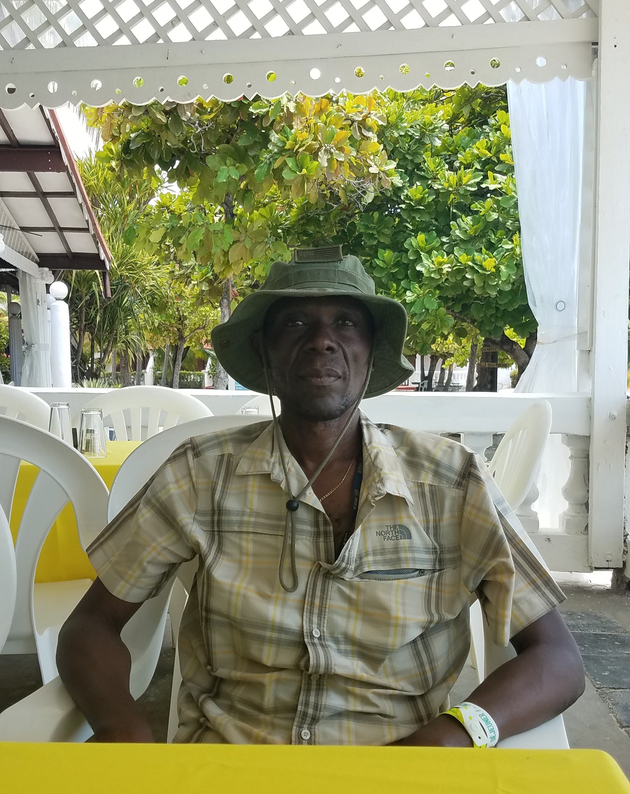
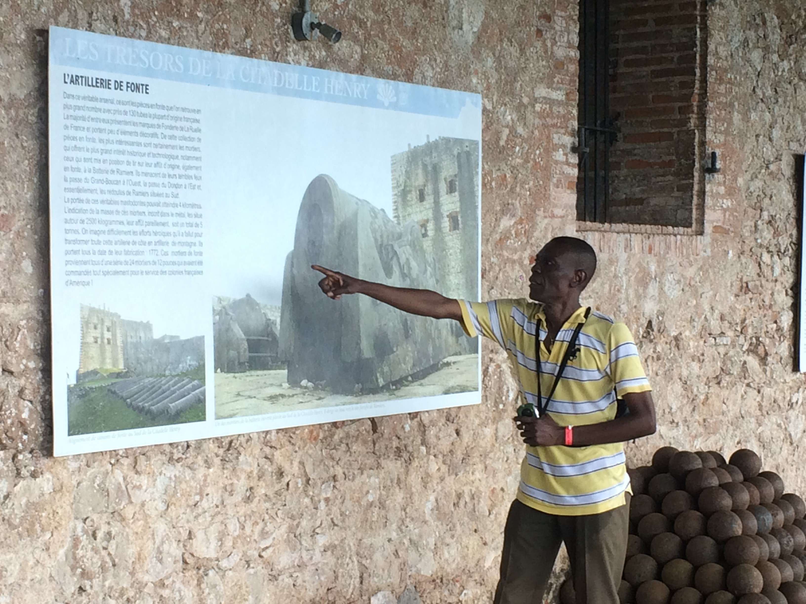
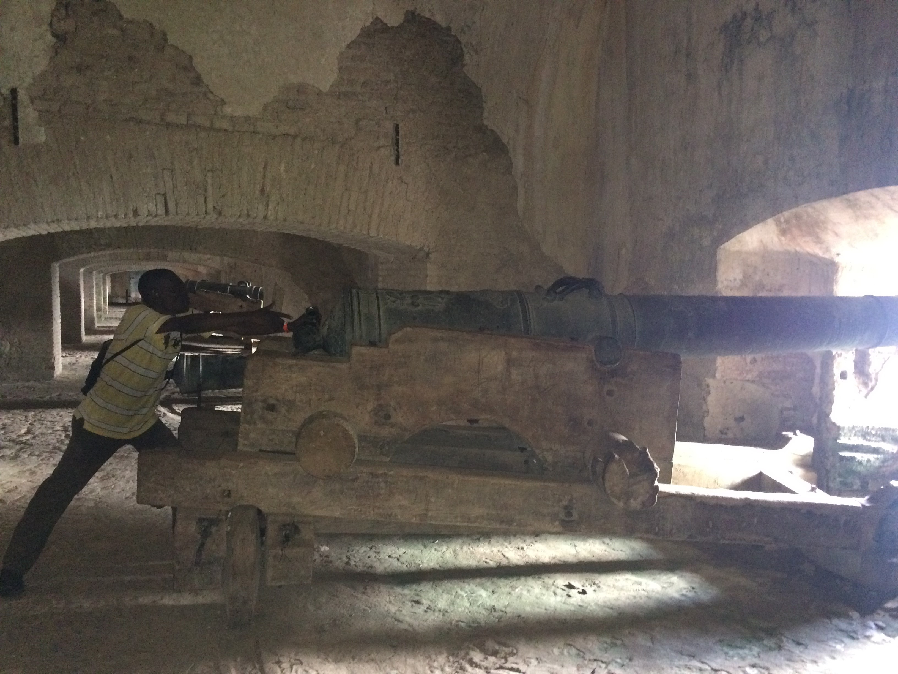
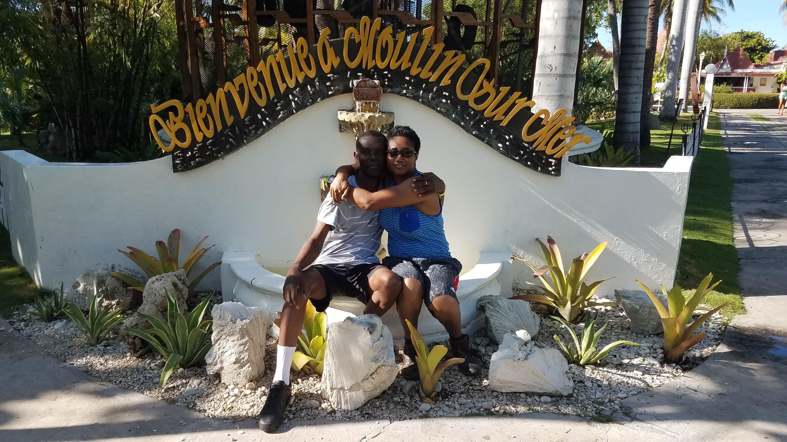

Welcome to My World
I was born in the vibrant coastal town of Cabaret, Haiti, in 1967. A devoted music lover, my heart swells with joy whenever I attend a concert by my favorite band, Tropicana.
Explore My Journey



Click below to learn more about my professional journey and personal interests.
Learn More